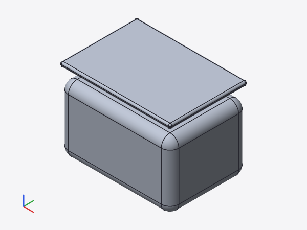
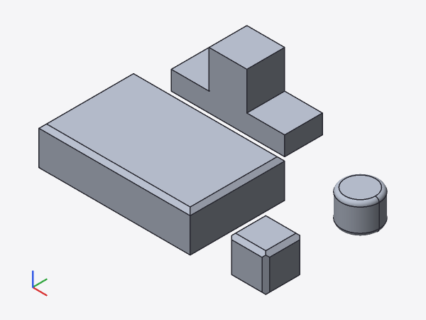
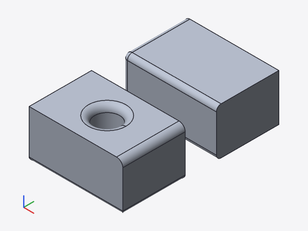

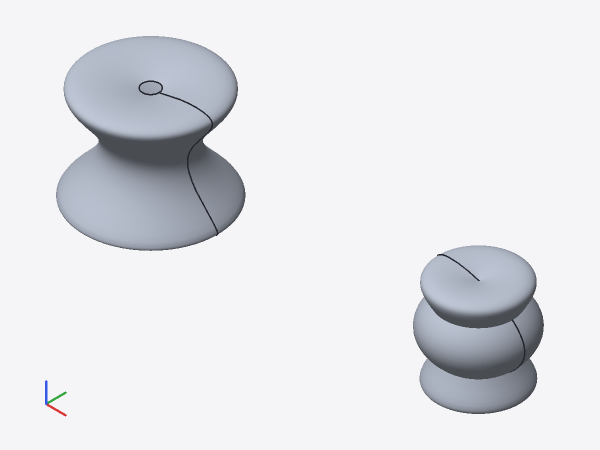
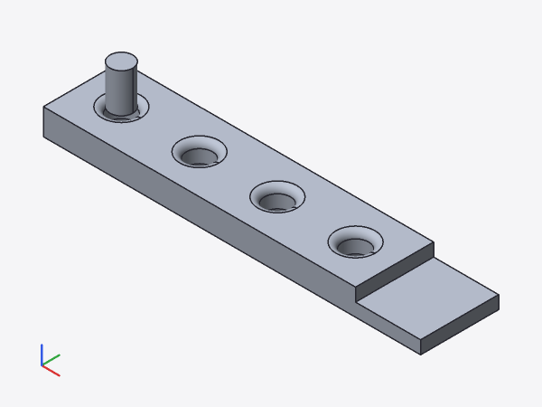
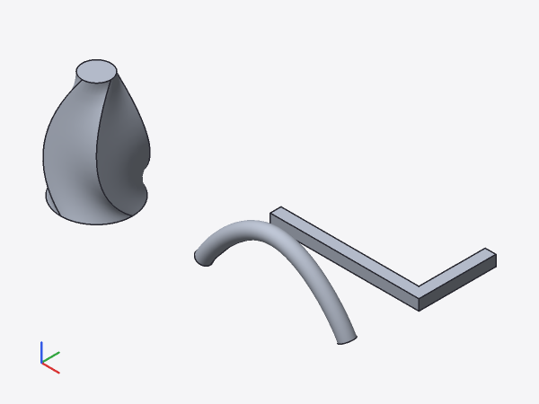
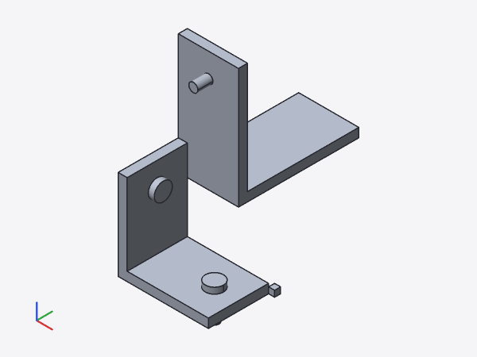
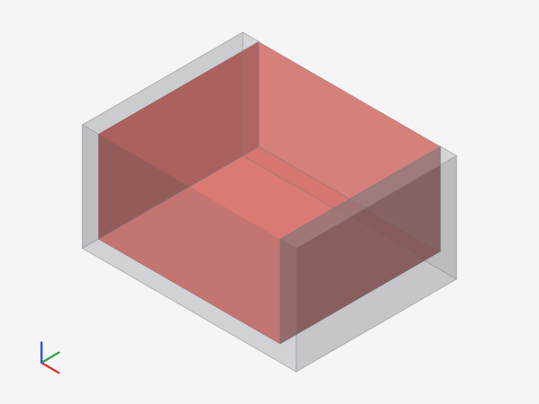
controller-cad · As of 2026-10-23 01:24 · Commit fd8dda6 2026-10-23 01:24 Facade: keep SMLib's own result when the check fails (branch worktree-agent-a45db6d1ee5be50fc)
This report covers the four lower layers of the application (the UI is not part of this report):
smlib.wasm); Rust binding kernel-smlib. Operations: primitives, transformations, booleans, fillet/chamfer, extrusion (with twist/scale), revolve, loft, sweep, NURBS surface, thicken, shell, edge/face queries, classification, tessellation, mass properties.cad-syntax, cad-eval): variables, functions, modules, children(), for/if/let/each, list comprehensions, echo/assert, modifiers, 2D/3D primitives, extrusions; plus the extensions from the spec: grids (grid), anchors, named instances, box() between grid points, fillets/chamfers with zones, loft, sweep, handles.cad-engine evaluates the geometry tree incrementally with a cache (content-based keys), maps faces and edges to source lines, selects edges via zones and exports STL/3MF; cad-session provides the protocol for the worker and the CLI.cad check | eval | inspect | render | export with --json; render uses the software rasterizer cad-render.| System | Ubuntu 24.04.5 LTS (Linux 6.18.44-fc-v140), Intel(R) Xeon(R) Processor @ 2.80GHz, 4 cores, 16 GiB RAM, container without GPU |
|---|---|
| Rust | rustc 1.97.0 (2d8144b78 2026-07-07); cargo 1.97.0 (c980f4866 2026-06-30) |
| Kernel | usd-brep @ c9c5979 (SMLib, SM_API), prebuilt natively: /home/user/controller-cad/smlib/build-native |
| Emscripten | emcc (Emscripten gcc/clang-like replacement + linker emulating GNU ld) 6.0.13 (e13ee988ce3d87a738dd8f3661d02223308c412a) |
| wasm-bindgen | wasm-bindgen 0.2.129 |
| Node | v22.22.0 |
| OpenSCAD (reference) | OpenSCAD version 2021.01; images with xvfb-run, orthographic |
| Chromium from Playwright 1.56.1 | |
| Python | 3.13.16 |
Release build of the CLI: 0.1 s (incremental). All numbers come from one run of tools/report/report1.py; times are wall-clock times on this machine.
| Crate | Content | passed | failed | ignored | Test time | cargo run time | Status |
|---|---|---|---|---|---|---|---|
cad-cli | CLI | 7 | 0 | 0 | 2.91 s | 4.0 s | ok |
cad-kernel | Kernel trait, mesh, export | 0 | 0 | 0 | 0 s | 0.2 s | ok |
cad-render | Software rasterizer | 4 | 0 | 0 | 1.50 s | 2.4 s | ok |
cad-engine | Evaluation, cache, provenance, zones | 31 | 0 | 0 | 6.99 s | 8.0 s | ok |
cad-ir | Geometry tree, cache keys | 0 | 0 | 0 | 0 s | 0.2 s | ok |
cad-syntax | Lexer, parser, AST | 16 | 0 | 0 | 0.00 s | 0.2 s | ok |
cad-eval | Language evaluation, grids, anchors, handles | 102 | 0 | 0 | 0.46 s | 0.8 s | ok |
kernel-smlib | SMLib facade (native) | 31 | 0 | 0 | 6.77 s | 7.3 s | ok |
cad-session | Session, protocol | 8 | 0 | 0 | 0.13 s | 1.5 s | ok |
cad-wasm | Wasm entry point (worker) | 0 | 0 | 0 | 0 s | 0.1 s | ok |
compat-tests | OpenSCAD comparison, stage 1 | 3 | 0 | 0 | 0.04 s | 0.2 s | ok |
kernel-mock | Test kernel | 0 | 0 | 0 | 0 s | 0.1 s | ok |
| Total | 202 | 0 | 0 | 18.80 s | 25.2 s |
Test time: sum of the times reported by the test binaries (debug build, SMLib and facade optimized). cargo run time: cargo test -p <crate> after a prior build.
kernel-smlib/tests/kernel.rs| Mode | Runs | failed | Test | Duration |
|---|---|---|---|---|
| serial (--test-threads=1) | 30 | 0 | – | 201 s |
| parallel (default, 4 threads) | 30 | 0 | – | 201 s |
| parallel (--test-threads=8) | 30 | 0 | – | 203 s |
Before the fixes: 4 of 40 runs with 8 threads failed (shell too thick). After the rand() fix, 100 runs with 8 threads still failed once each in invalid_profiles_fail_cleanly (memory error in SMLib's shell) and handles_are_released (parallel counter); both have been fixed since.
node crates/kernel-smlib/js/test-node.mjs: 10 of 10 tests passed (ok).
| Test | Time | Status |
|---|---|---|
| box volume | 23.1 ms | ok |
| box minus cylinder + provenance | 88.1 ms | ok |
| fillet all edges of a box | 330.8 ms | ok |
| fillet too large → error with edges | 111.3 ms | ok |
| classify | 1.9 ms | ok |
| tessellate | 42.4 ms | ok |
| extrude, revolve, mirror | 76.9 ms | ok |
| union of three orthogonal cylinders (checked boolean) | 497.3 ms | ok |
| twisted extrude: rotate, then scale (OpenSCAD) | 64.8 ms | ok |
| invalid handle | 0.3 ms | ok |
| Bug | Cause | Fix, evidence |
|---|---|---|
| Union of three orthogonal cylinders: 3237 instead of 3800 mm³ (05_nested_booleans) | For (Z ∪ Y) ∪ X, SMLib reports success but drops the −x arm of the X cylinder (bounding box x ≥ −4); (Z ∪ X) ∪ Y is correct, (Y ∪ X) ∪ Z ends with SM_ERR. Only with equal radii (intersection curves with touching points); with r = 3.9 or 4.1 for the third cylinder the result is correct. mass_props and the mesh are equally wrong: not a tessellation or export bug. Pairwise, the facade already computed correctly. | The facade checks every pairwise result (volume inequalities, location of probes, 5 per face, just inside and outside the operand faces) and otherwise tries: swap operands, different order, and finally shift the second operand by 10⁻⁶…10⁻⁴ of the model size; if nothing passes, SMLib's result is kept as before. Tests: kernel.rs and engine.rs::union_of_three_orthogonal_cylinders (all 6 orders, nested, as a hole), Node test. |
| linear_extrude with twist: bounding box off by 1.25 mm (12_linear_extrude_twist) | Section t was scaled first and rotated afterwards; OpenSCAD rotates first and then scales along x/y (Scaling(s)·Rotation2D(−twist·t)). With scale = [1, 0.5] this gives different cross-sections (y up to 5.08 instead of 3.83 mm). Direction of rotation and start angle were correct. In addition: sections every 22.5° (bounding box error 3·10⁻³ mm), and the mesh was 2.9 % above the volume because SMLib limits the chord height only at triangle edges. | Order as in OpenSCAD; sections every 7.5° (bounding box within 10⁻⁴ mm, volume 540.000 of 540). On freeform surfaces the tessellation measures the deviation of the triangle centers and refines until ≤ 2·tol (at most 3 passes, triangle budget). Tests: twisted_extrude_with_nonuniform_scale_matches_openscad, twisted_extrude_mesh_volume, engine.rs::linear_extrude_twist_nonuniform_scale_like_openscad. |
Flaky test invalid_profiles_fail_cleanly | Two causes, both in the too-thick shell (10 mm cube, 6 mm wall, must fail). (1) SMLib calls srand(time(NULL)) in SmFace::GetPointsInFace and SmShell::IsInnerShellOf: before, 4 of 40 runs (8 threads) failed; with a fixed clock (time() via LD_PRELOAD), 0 of 40. An srand before each operation is not enough, because SMLib reseeds in the middle of the operation. (2) After that, still 1 of 100: with a too-thick wall, SMLib's shell reads freed memory (valgrind: Invalid read in SmProtoEdge::RemoveProtoVertex; solidcore UB-239/242); depending on the heap it fails, returns a body, or crashes (segfault in a loop after 9 calls). | (1) The facade defines rand()/srand() itself (statically linked, native and Emscripten): fixed seed, reset on every sc_* call. (2) sc_shell rejects walls that do not fit between two opposite planar faces (distance ≤ 2·t) before SMLib is called. In addition, handles_are_released failed when run in parallel (process-wide counter): separate test binary. Section 3.2; tests determinism.rs, handles.rs. |
| Diagonal bands on subtracted bodies rendered transparent | cad-render sorted transparent triangles by centroid. Where triangles overlap in depth, especially on coplanar faces (subtracted body and its cavity in the dimmed result), the order flips along the triangle diagonals. | Fragments are sorted by depth per sample, coplanar ones in scene order (figure gehaeuse --line 12 in section 5). Test: render.rs::transparent_coplanar_faces_have_no_diagonal_bands. |
tests/openscad-compat/compare.py exports each model as STL (cad export, chord tolerance 0.01 mm) and compares volume, area and bounding box with OpenSCAD 2021.01 ($fn = 128 for round shapes, see tests/openscad-compat/README.md). Tolerances: bounding box 0.01 mm; volume and area 1 % (polygonal) or 2 % (rounded). Result: 33 of 33 within tolerance, run time 11.3 s.
| Model | Class | V OpenSCAD [mm³] | V ours [mm³] | ΔV | ΔA | ΔBBox [mm] | Triangles | Time | Status |
|---|---|---|---|---|---|---|---|---|---|
01_cube_variants | polygonal | 3 208.0 | 3 208.0 | 0.00 % | 0.00 % | 0.0000 | 60 | 0.05 s | ok |
02_sphere_variants | rounded | 1 016.9 | 1 013.7 | 0.31 % | 0.15 % | 0.0015 | 14 912 | 0.81 s | ok |
03_cylinder_variants | rounded | 2 104.0 | 2 101.5 | 0.12 % | 0.05 % | 0.0000 | 1 260 | 0.18 s | ok |
04_cone_variants | rounded | 1 342.0 | 1 340.8 | 0.09 % | 0.05 % | 0.0000 | 1 010 | 0.12 s | ok |
05_nested_booleans | rounded | 8 310.3 | 8 312.7 | 0.03 % | 0.02 % | 0.0000 | 6 688 | 1.52 s | ok |
06_hole_grid | rounded | 6 295.6 | 6 296.7 | 0.02 % | 0.01 % | 0.0000 | 6 252 | 1.46 s | ok |
07_crown_ring | rounded | 2 160.7 | 2 160.9 | 0.01 % | 0.02 % | 0.0000 | 1 088 | 0.83 s | ok |
08_module_children | rounded | 6 172.5 | 6 171.6 | 0.02 % | 0.00 % | 0.0000 | 2 072 | 0.44 s | ok |
09_rotate_mirror | rounded | 1 460.1 | 1 459.9 | 0.01 % | 0.01 % | 0.0000 | 324 | 0.07 s | ok |
10_scale_multmatrix | polygonal | 3 400.0 | 3 400.0 | 0.00 % | 0.00 % | 0.0000 | 48 | 0.05 s | ok |
11_linear_extrude_basic | polygonal | 1 513.0 | 1 513.0 | 0.00 % | 0.00 % | 0.0000 | 32 | 0.02 s | ok |
12_linear_extrude_twist | rounded | 2 688.9 | 2 660.9 | 1.04 % | 1.49 % | 0.0000 | 15 730 | 0.54 s | ok |
13_rotate_extrude_ring | rounded | 1 307.1 | 1 306.3 | 0.06 % | 0.01 % | 0.0000 | 17 120 | 0.66 s | ok |
14_pipe_bend | rounded | 1 573.9 | 1 572.4 | 0.09 % | 0.03 % | 0.0000 | 9 672 | 0.64 s | ok |
15_vase | rounded | 6 362.3 | 6 362.3 | 0.00 % | 0.00 % | 0.0000 | 2 556 | 0.20 s | ok |
16_polygon_holes | polygonal | 2 318.0 | 2 318.0 | 0.00 % | 0.00 % | 0.0000 | 80 | 0.04 s | ok |
17_polyhedron | polygonal | 626.7 | 626.7 | 0.00 % | 0.00 % | 0.0000 | 14 | 0.01 s | ok |
18_functions_let | polygonal | 7 040.0 | 7 040.0 | 0.00 % | 0.00 % | 0.0000 | 52 | 0.05 s | ok |
19_hex_nut | rounded | 264.7 | 264.9 | 0.07 % | 0.01 % | 0.0000 | 552 | 0.11 s | ok |
20_box_with_lid | rounded | 20 574.8 | 20 576.1 | 0.01 % | 0.01 % | 0.0000 | 2 284 | 0.76 s | ok |
21_angle_bracket | rounded | 10 408.0 | 10 408.3 | 0.00 % | 0.00 % | 0.0000 | 1 088 | 0.32 s | ok |
22_gear | rounded | 6 943.8 | 6 944.3 | 0.01 % | 0.00 % | 0.0000 | 1 616 | 0.37 s | ok |
23_shelf_holder | rounded | 10 423.8 | 10 424.1 | 0.00 % | 0.00 % | 0.0000 | 1 184 | 0.23 s | ok |
24_modifiers | rounded | 3 622.5 | 3 623.2 | 0.02 % | 0.00 % | 0.0000 | 284 | 0.06 s | ok |
25_root_modifier | rounded | 346.5 | 346.4 | 0.05 % | 0.00 % | 0.0000 | 268 | 0.06 s | ok |
26_if_else_variants | rounded | 1 661.6 | 1 660.5 | 0.07 % | 0.04 % | 0.0012 | 4 380 | 0.34 s | ok |
27_spacers_2d | rounded | 2 961.5 | 2 961.4 | 0.00 % | 0.01 % | 0.0000 | 2 512 | 0.47 s | ok |
28_cable_clip | rounded | 560.9 | 561.0 | 0.02 % | 0.01 % | 0.0013 | 796 | 0.20 s | ok |
29_assert_strings | rounded | 1 907.4 | 1 907.5 | 0.00 % | 0.00 % | 0.0000 | 276 | 0.08 s | ok |
30_each_ranges | polygonal | 832.0 | 832.0 | 0.00 % | 0.00 % | 0.0000 | 116 | 0.07 s | ok |
31_phone_stand | polygonal | 40 840.2 | 40 840.2 | 0.00 % | 0.00 % | 0.0000 | 84 | 0.03 s | ok |
32_low_fn_shapes | polygonal | 1 199.0 | 1 199.0 | 0.00 % | 0.00 % | 0.0000 | 102 | 0.04 s | ok |
33_global_fn | rounded | 1 625.6 | 1 627.4 | 0.11 % | 0.04 % | 0.0060 | 4 860 | 0.35 s | ok |
All images 600×450 px, isometric view (looking along (−1, 1, −1), orthographic), cad render <file> --size 600x450. OpenSCAD images: openscad -o x.png --render --imgsize=600,450 --viewall --autocenter --projection=ortho --camera=100,-100,100,0,0,0 with the same -D values as the reference.
examples/spec/)Only with our CLI: grids, anchors, fillets and zones do not exist in OpenSCAD.








05_nested_booleans nested booleans – cube intersected with a sphere, cross hole subtracted.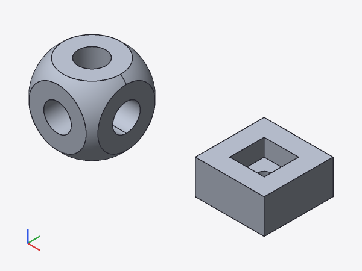
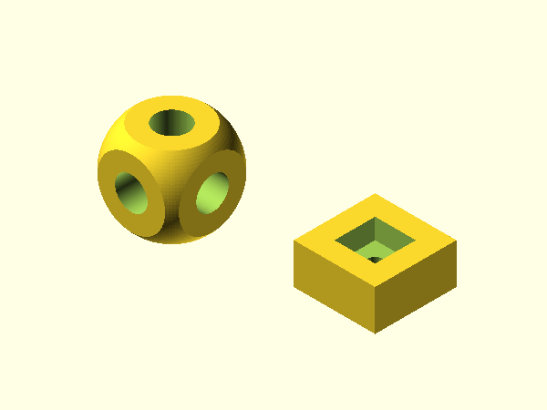
06_hole_grid perforated plate – a for loop with two variables creates a grid of holes.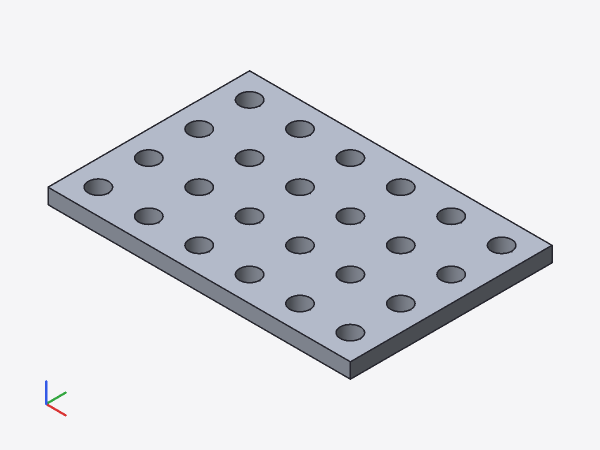
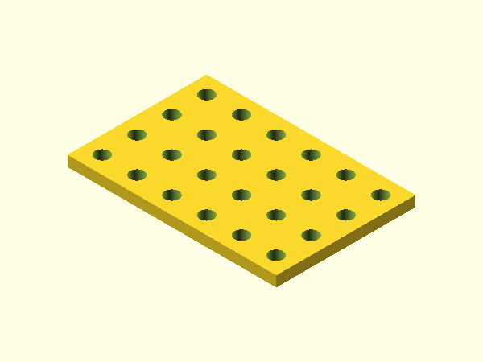
07_crown_ring crown-gear-like ring – teeth evenly distributed with for and rotate.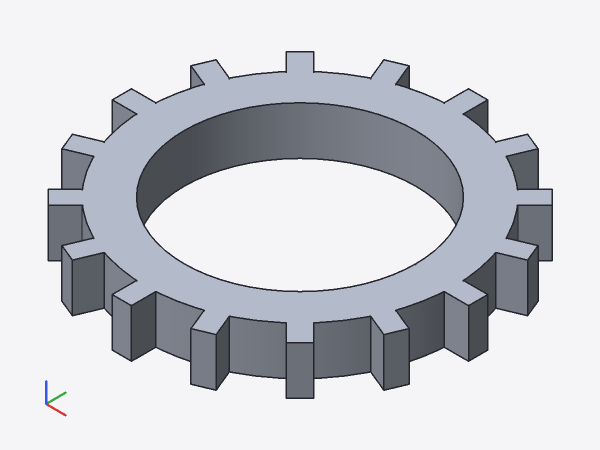
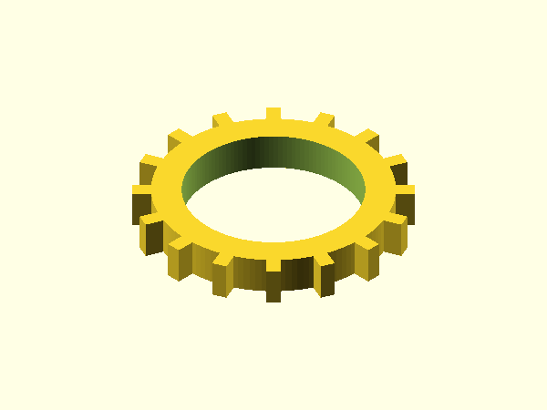
12_linear_extrude_twist linear_extrude with twist and scale – twisted bar and tapered base.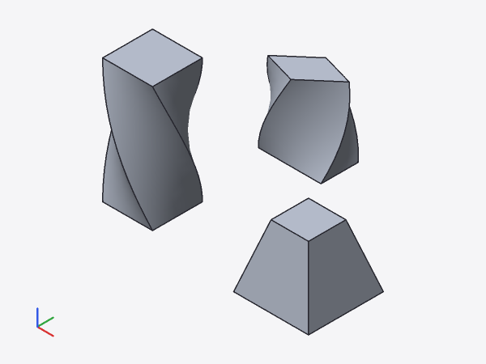
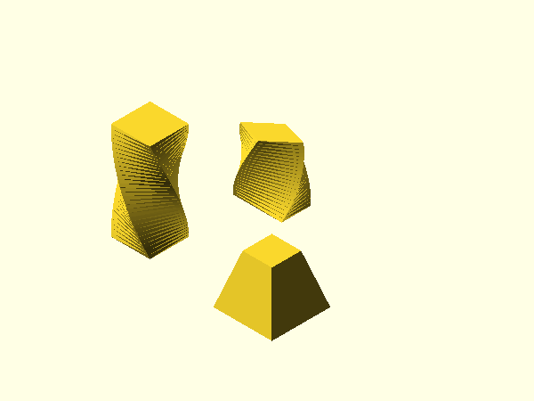
13_rotate_extrude_ring rotate_extrude of an offset circle (ring) and of a rectangle (disc with hole).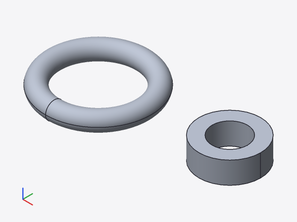
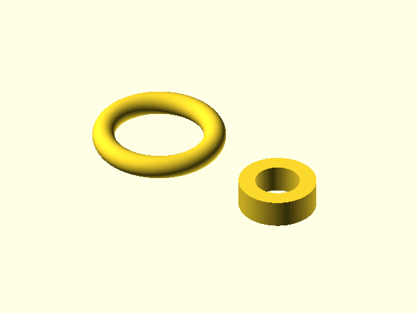
14_pipe_bend pipe bend via rotate_extrude(angle = 90) with two straight connecting pieces.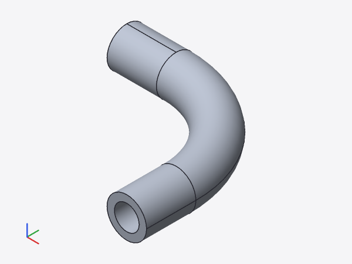
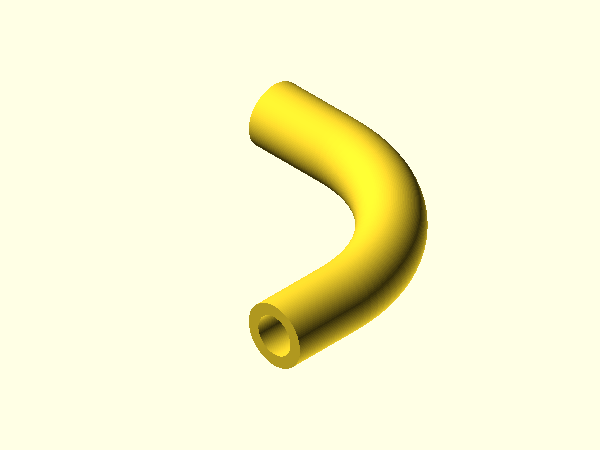
15_vase vase as rotate_extrude of a polygon profile (wall 2 mm, bottom 2 mm).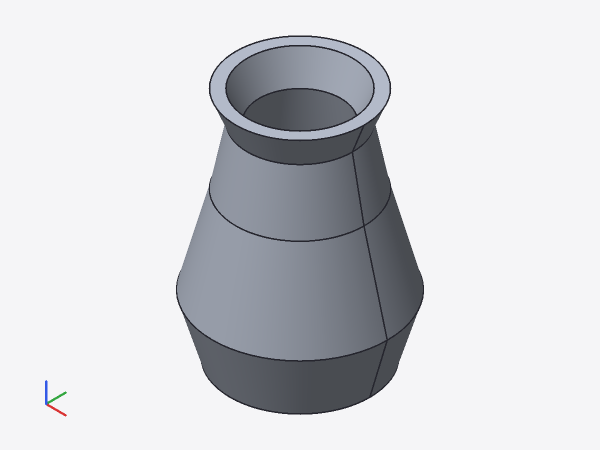
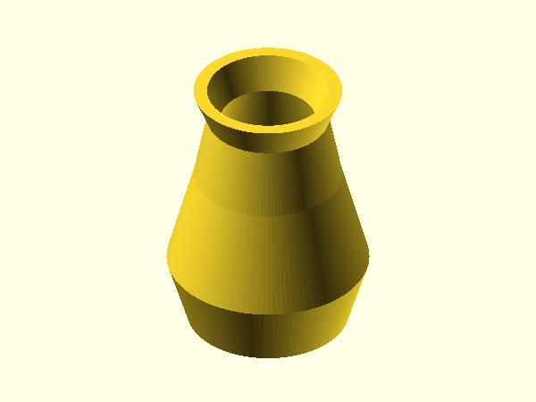
19_hex_nut M5 hex nut – $fn = 6 at the call creates the hexagon, the hole is round.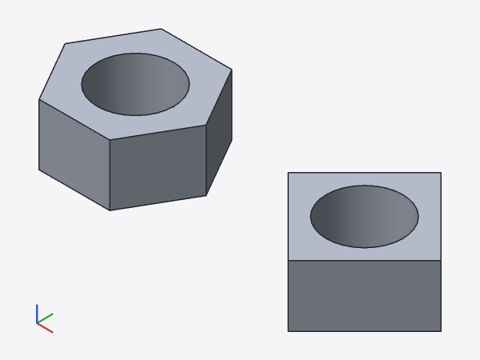
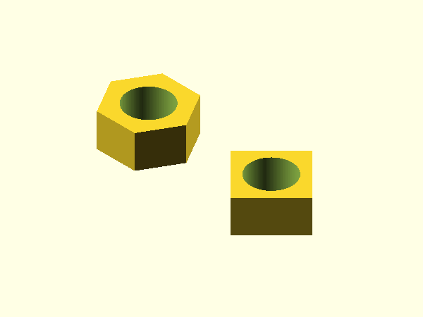
22_gear simplified spur gear – trapezoidal teeth as a polygon from a list comprehension.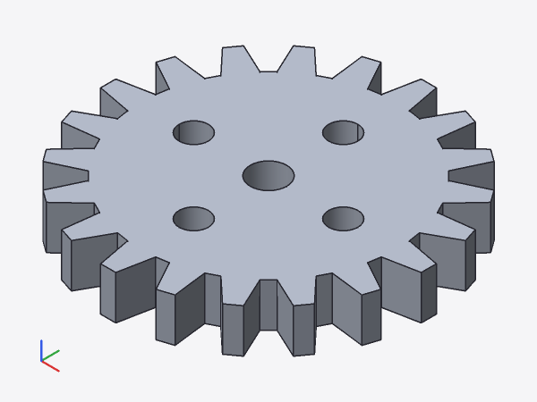
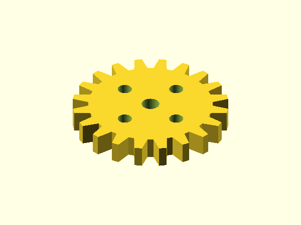
31_phone_stand phone stand – inclined back rest via rotate, lip, cable slot; profile via polygon.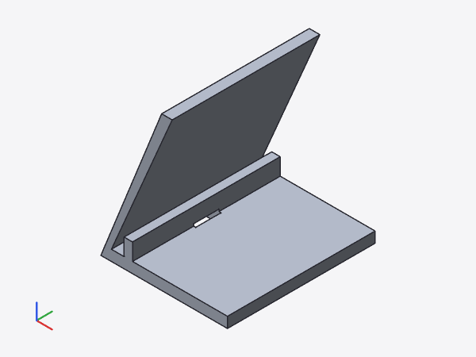
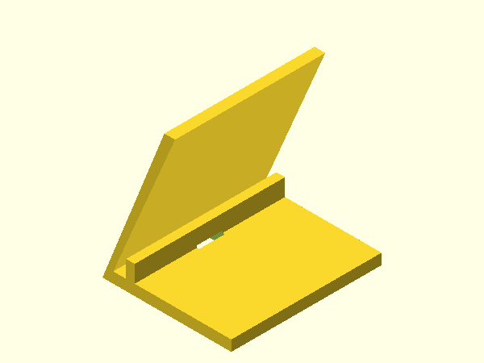
| File | raw | gzip −9 | Brotli q11 |
|---|---|---|---|
smlib.wasm | 4 993 KiB | 1 769 KiB | 1 270 KiB |
smlib.js | 14 KiB | 5 KiB | 4 KiB |
cad_wasm_bg.wasm | 1 186 KiB | 464 KiB | 353 KiB |
cad_wasm.js | 28 KiB | 6 KiB | 5 KiB |
smlib.wasm: SMLib + SM_API + facade, Emscripten -O3 -fwasm-exceptions; cad_wasm_bg.wasm: language, engine, session (wasm-bindgen, wasm-opt −O3).
web/scripts/smoke-node.mjs --json with the example gehaeuse, median of 3 runs, step budget 16 ms.
| Step | Time |
|---|---|
| Load, compile, initialize smlib.wasm | 32.4 ms |
| Load and initialize cad_wasm | 32.4 ms |
| SetSource → preliminary scene (without kernel) | 20.7 ms |
| SetSource → complete scene | 123.1 ms |
| SetSource → root mesh | 141.3 ms |
| Request meshes of all nodes | 6.1 ms |
| Drag handle → TextEdit → new scene | 12 ms |
| … → coarse root mesh | 14.1 ms |
| Repeated SetSource (warm cache) → preliminary scene | 0.9 ms |
| Repeated SetSource (warm cache) → scene | 21.9 ms |
| Repeated SetSource (warm cache) → root mesh | 23.9 ms |
| Evaluation steps until the complete scene | 5 |
| Triangles of root mesh / nodes of the scene | 40 / 8 |
Kernel only (test-node.mjs): read file 4.5 ms, compile, instantiate and initialize 29.0 ms. Scenario: box-cylinder + fillet(5 top edges) + tessellate (1376 triangles): primitives 4.1 ms, boolean 24.4 ms, edges 0.5 ms, fillet 64.3 ms, tessellate 44.3 ms; total incl. load 1410 ms.
cad export per model (process start, evaluation, tessellation, STL): median 0.20 s, total 11.2 s; longest 05_nested_booleans 1.52 s, 06_hole_grid 1.46 s, 07_crown_ring 0.83 s.
cad render of the spec examples (600×450, 2×2 supersampling): dose_shell 0.69 s, fase_chamfer 0.26 s, fillet_zonen 0.31 s, gehaeuse 0.06 s, knauf_mirror 2.67 s, lochplatte 0.51 s, loft_sweep 0.47 s, winkel_anker 0.46 s.
cad export of all 41 examples, measured during the fix, 13.7 s → 18.9 s (+38 %), most for unions of many parts (07_crown_ring ×2.1) and for knauf_mirror (×1.9, fallbacks).cad then reports volume 0 (winkel_anker; the STL is fine). knauf_mirror: the rotated spline body minus the hole is open, torus and pin are missing from the result, the fillet at the hole fails (SM_ERR) – all as before this round, still open.scale and scale = 0 (apex) are not supported.rand() is replaced with a fixed, process-wide implementation. Memory errors in SMLib make results depend on the heap: the shell pre-check only covers planar, opposite walls; walls that barely fit (10 mm cube, t = 4.99) already show invalid reads under valgrind. Only the upstream fixes (tangency-labs/smlib 93efd6d, af8db37) or solidcore will resolve this.cad render is a software rasterizer (orthographic, Lambert, 2×2 supersampling) without shadows or perspective. Per-pixel transparency needs memory proportional to the number of layers.Generated with python3 tools/report/report1.py (PDF: tools/report/print-pdf.mjs, Chromium from Playwright).